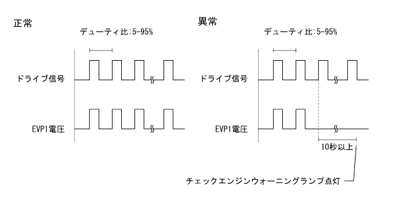
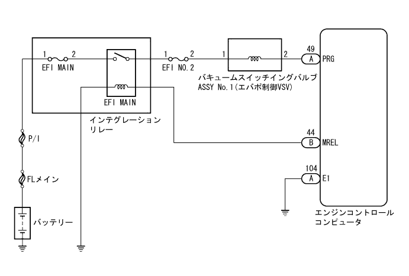
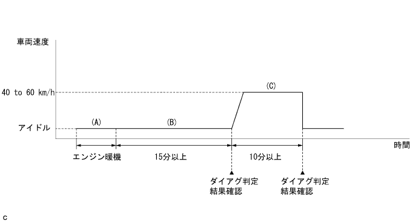
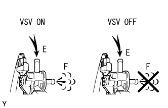
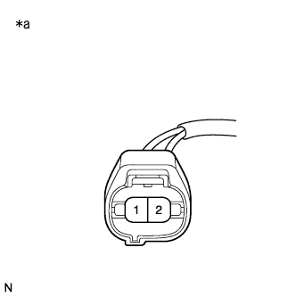

DTC P0443/94 EVAP Purge Control D-VSV Open Circuit |
| DTC No. SAE/TCCS | DTC Detection Conditions 1. Diagnosis conditions 2. Malfunction status 3. Malfunction duration 4. Other | Inspection Area |
|---|---|---|
| P0443/94 |
|
|



))| Step 1 | Perform TaSCAN Active Test (Purge VSV) |
Connect SST (TaSCAN) to DLC3.
Turn IG ON.
Following the SST (TaSCAN) screen display, select [Active Test] - [Purge VSV].
| Item Name | Description | Restrictions |
|---|---|---|
| Purge VSV | Purge VSV (vacuum switching valve assembly No.1) energized/de-energized (duty ratio when energized 30%) | IG ON |
Disconnect the 2 vacuum hoses of vacuum switching valve assembly No.1.
 |
Operate vacuum switching valve assembly No.1.
Apply positive pressure to port E and check whether air passes through.
| Active Test (Purge VSV) | Specified Condition |
|---|---|
| ON | Air passes from port E to port F |
| OFF | Air does not pass from port E to port F |
| Result | Proceed to |
|---|---|
| NG | A |
| OK | B |
|
| ||||
| A | |
| Step 2 | Inspect Vacuum Switching Valve Assembly NO.1 |
for reference.
|
| ||||
| OK | |
| Step 3 | Inspect Wire Harness and Connector (Vacuum Switching Valve Assembly NO.1 Power Source Voltage) |
for reference. |
Disconnect the vacuum switching valve assembly No.1 connector.
Turn IG ON.
Using SST (Toyota electrical tester), measure the voltage between the terminals.
| Inspection terminals Vacuum switching valve assembly No.1 vehicle side connector - Body ground | Condition | Standard |
|---|---|---|
| 1 - Body ground | IG ON | 11 to 14 V |
| *a | Front side of vehicle wire harness connector (vacuum switching valve assembly No.1 connection connector) |
|
| ||||
| OK | |
| Step 4 | Inspect Wire Harness and Connector (Vacuum Switching Valve Assembly NO.1 - Engine Control Computer) |
for reference.Disconnect connector A of the engine control computer.
Disconnect the vacuum switching valve assembly No.1 connector.
Using SST (Toyota electrical tester), measure the resistance between the terminals. (For Terminals of ECU, see)
| Inspection terminals Engine control computer vehicle side connector - Vacuum switching valve assembly No.1 vehicle side connector | Condition | Standard |
|---|---|---|
| A49(PRG) - 2 | Always | Below 1 Ω |
| Inspection terminals Engine control computer vehicle side connector and vacuum switching valve assembly No.1 vehicle side connector - Other terminals and body ground | Condition | Standard |
|---|---|---|
| A49 (PRG) and 2 - Other terminals and body ground | Always | 10 kΩ or higher |
|
| ||||
| OK | |
| Step 5 | Clear DTC |
Connect SST (TaSCAN) to DLC3.
Turn IG ON.
Following the SST (TaSCAN) screen display, clear the DTCs. (see)
| NEXT | |
| Step 6 | Perform Operation Check Drive |
Connect SST (TaSCAN) to DLC3.
Start the engine, turn all accessory switches OFF, and warm up the engine until the engine coolant temperature stabilizes. (Engine coolant temperature 75°C or higher) (A)
Idle the engine for 15 minutes or more. (B)
Following the SST (TaSCAN) screen display, select main menu [Diagnosis] - diagnosis menu [Powertrain] - [TCCS] - system diagnosis menu [DTC Judgment Result Check] - [Check by DTC].
On the next screen, enter the DTC to be checked.
Check the DTC judgment result.
| Result | Proceed to |
|---|---|
| NG | A |
| OK | B |
| Display Item | Description |
|---|---|
| OK |
|
| NG |
|
| Judging |
|
| Judgment not possible |
|
|
| ||||
| A | ||
| ||